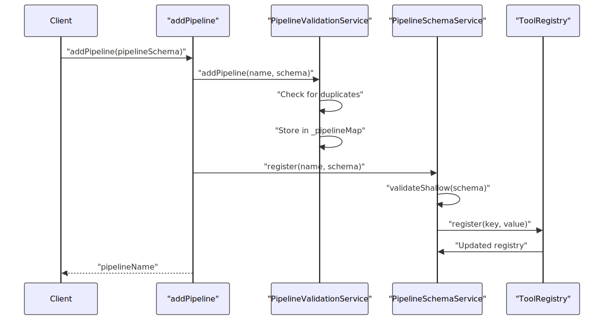

The Pipeline System provides automated workflow execution capabilities within the agent swarm framework. It enables developers to define, register, and execute background processes that can operate independently of regular agent interactions while maintaining integration with the session management, agent navigation, and validation systems.
For information about agent navigation and routing, see Navigation System. For session and client management patterns, see Session and Chat Management.
Pipelines are defined using the IPipelineSchema interface, which specifies the execution logic and optional lifecycle callbacks.

The core pipeline schema includes:
| Property | Type | Description |
|---|---|---|
pipelineName |
PipelineName |
Unique string identifier for the pipeline |
execute |
Function |
Main execution logic accepting clientId, agentName, and payload |
callbacks |
IPipelineCallbacks |
Optional lifecycle event handlers |
Pipelines are registered using the addPipeline function and managed through the schema and validation services.

The PipelineSchemaService manages pipeline schema storage and retrieval using a ToolRegistry:
The PipelineValidationService ensures pipeline uniqueness and existence:
Pipeline execution is handled by the startPipeline function, which manages session validation, agent navigation, and lifecycle callbacks.

The scope function enables temporary schema overrides for pipeline execution, allowing isolated testing and customization.

The scope function allows temporary overrides of:
| Service | Purpose |
|---|---|
pipelineSchemaService |
Override pipeline definitions |
agentSchemaService |
Override agent configurations |
toolSchemaService |
Override tool definitions |
completionSchemaService |
Override AI model configurations |
Pipelines integrate with several core systems within the agent swarm framework:

Pipelines operate as background processes that can:
The callback system provides hooks for monitoring and controlling pipeline execution:
| Callback | Trigger | Parameters | Purpose |
|---|---|---|---|
onStart |
Pipeline begins execution | clientId, pipelineName, payload |
Initialize resources, logging |
onError |
Exception during execution | clientId, pipelineName, payload, error |
Error handling, cleanup |
onEnd |
Pipeline completes | clientId, pipelineName, payload, isError |
Final cleanup, reporting |
The callback system enables comprehensive pipeline monitoring and provides hooks for custom error handling, resource cleanup, and execution reporting.